As an alternative to using a mouse, you can navigate menus by pressing buttons on your keyboard. The following table lists the keyboard buttons used for navigation and their corresponding actions:
| Button | Action |
| 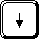 | Moves down the current menu. If a child menu is open, continues iterating through the child menu. |
| 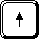 | Moves up the current menu. |
| 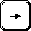 | Expands a child menu. |
| 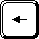 or 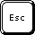 | Closes the current menu. |
| 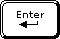 | Opens the selected file. |
| 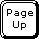 | Scrolls up the number of items that you specify in Page Up/Page Down scrolls spin control. |
| 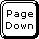 | Scrolls down the number of items that you specify in Page Up/Page Down scrolls spin control. |
| 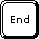 | Makes the last item in the currently active menu visible. This key has no effect if the menu fits into the screen. |
| 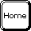 | Makes the first item in the currently active menu visible. This key has no effect if the menu fits into the screen. |
| 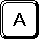 ... 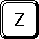 | Searches the currently active menu for an item having the name that matches the sequence of characters that you type. |
| 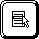 | Displays a contextual menu for the currently selected item. This key has no effect if nothing is selected |